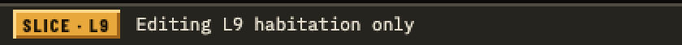
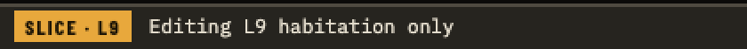
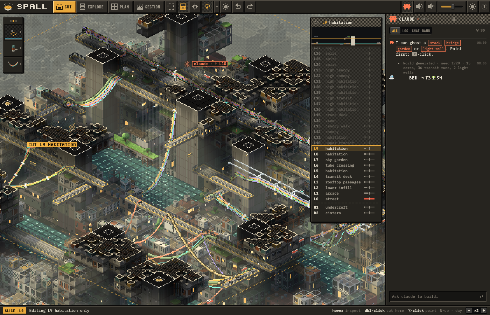
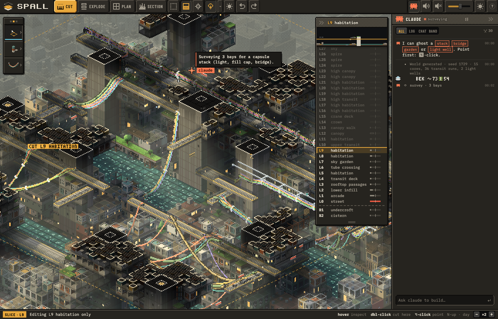
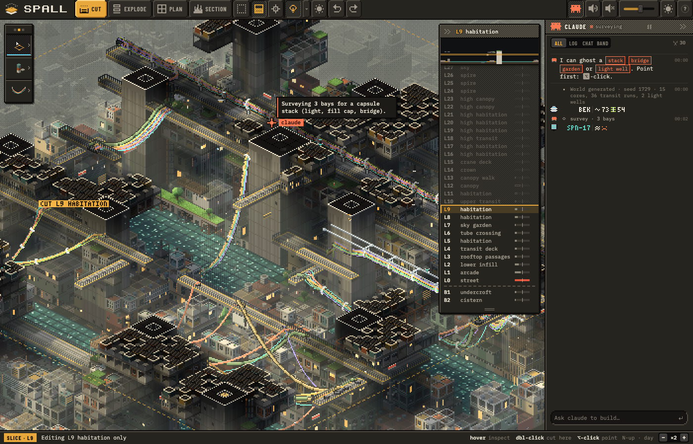
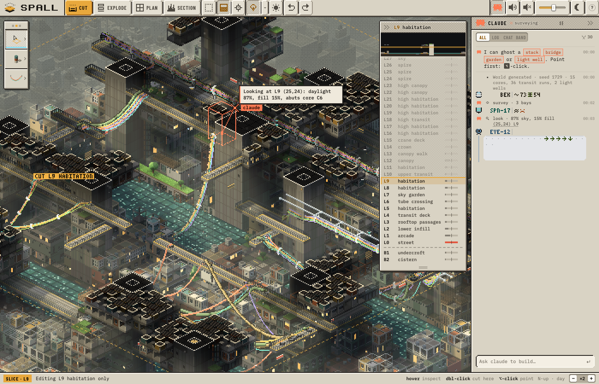

CORNERS AND RELIEF
Rounder corners for the raised and sunken parts of the chrome, and less relief on the top bar. Everything below is a screenshot of the real game (pixel crops at 2×). The variants are codes in the game. To try a mix, open the game with ?ui= and the codes, for example ../?ui=TC2,TE1,FC1. A link like that changes only that visit; nothing is saved.
The corners are cut in whole game pixels, and the pixels the cut exposes take the bevel's colours. So the highlight runs round the corner instead of stopping where the square was clipped. The sizes:
- 1 pixel off each corner;
- 3 pixels (2 + 1): a small pixel-art round;
- 6 pixels (3 + 2 + 1): a 45° chamfer, the cut corners of the band's little windows;
- 8 pixels (4 + 2 + 1 + 1): a larger round.
My pick: TC2 + TE1 + FC1, the 3-pixel round on the top bar and the field, with the top bar's upper highlight gone. It reads as one family, and the cuts are small enough to stay crisp at 1× zoom. The chamfer (TC3 + TE1 + FC2) ties the chrome to the band's windows, but on a row of buttons it notches each join.
1 · The slice label ● live
It was drawn with the same raised bevel as a pressed button, but it's a label. Now it's a flat amber tag.


2 · Top-bar buttons and relief
Corners, TC:
- TC0 square (now);
- TC1 1 pixel;
- TC2 3 pixels;
- TC3 the 6-pixel chamfer.
Relief, TE:
- TE0 now: a light line along the top and a dark edge underneath;
- TE1 the top highlight is gone and the buttons run up to the top of the window, with the bottom edge kept;
- TE2 flat, with a single dark line underneath.
Between rounded buttons, the cut corners show the bar behind them.
3 · The field
The "Ask claude to build…" well, FC:
- FC0 square (now);
- FC1 3 pixels;
- FC2 the 6-pixel chamfer, as on the band's windows;
- FC3 the larger 8-pixel round.
A well is lit the other way round to a button (dark top-left, light bottom-right), and the corner pixels follow that.
4 · Together




The small controls still use smooth CSS corners: the buttons in the feed, the segmented filters, the zoom stepper and the sliders. If the top bar goes pixel-round, those should probably follow so the corners match everywhere. That's the next step if you pick one of these.